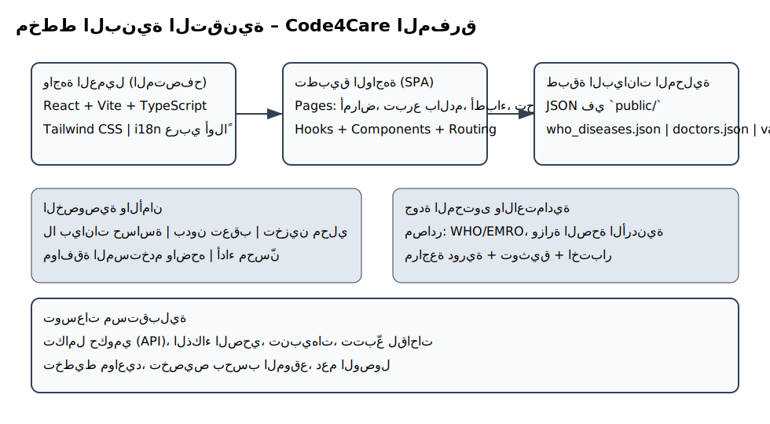

المخططات
مخطط البنية
تدفق المستخدم

نسخة PDF عربية موجزة تحتوي على معلومات الموقع، الصفحات، مجموعات البيانات، ومخططات البنية وتجربة المستخدم.
منصة صحية موجهة لسكان محافظة المفرق، تقدّم صفحات وخدمات للتثقيف الصحي، التبرع بالدم، قراءة التحاليل، دليل الأطباء، والمستشفيات، مع تجربة عربية كاملة (RTL). تعتمد على React + Vite + TypeScript وواجهة shadcn-ui و Tailwind CSS.
public/doctors.json مع تخصص/موقع/تأمين.public/who_diseases.json — مواضيع الأمراض (WHO/EMRO) مع روابط مرجعية.public/vaccines.json — جداول اللقاحات والملاحظات للفئات العمرية والخاصة.public/doctors.json — دليل أطباء المفرق (اسم، تخصص، موقع، تواصل).scripts/fetch_who_topics.mjs — جلب وتجهيز مواضيع الأمراض.scripts/fetch_jo_doctors.mjs — جلب/تنظيف بيانات الأطباء.